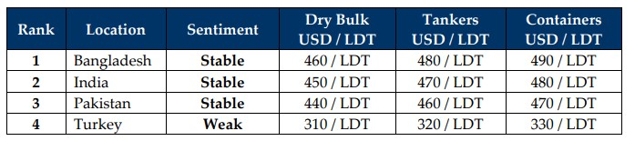

inWeekly Demolition Reports07/01/2025

As forecasted in last week’s edition of the WEEKLY, 2025 seems to have started on an optimistic note in the ship recycling markets,with a noticeable willingness to buy from various buyers across the Indian sub-continent board who have now seen their plots empty out amidst a decade long dither in the supply of vessels seen across 2024. Although the turn of the year seems to be bringing in a sprinkle of optimism, there remains little to be cheery about as key economic factors affecting the various ship recycling locations continue to wobble as warring unrest rages on and primary fundamentals deliver a mix of the usual + a sprinkle of worry as the U.S. Dollar continues to rage on against all ship recycling destinations this week. On the back of the news of gas supply from the Ukraine to the EU being cut off last week, oil exports to both winter-ridden Europe and even the U.S. saw oil prices surge this week, adding another 5% and closing the week at nearly USD 74 / barrel despite ongoing demand concerns resulting from China’s economic fragility, as stimulus package concerns keep demand (for oil) from the world’s largest importer in check. An even colder winter is expected to keep or worse yet, drive prices up in the near future. Additionally, after reporting a dreadful Q4 in charter rates, the Baltic Index reported a surprising gain as the week ended with a surging of about 4.2% that could potentially delay the inflow of tonnage.
Meanwhile, and as reported in prior editions, news of several large LDT wet units (including those with questionable / sanctioned backgrounds) were seen making the rounds on the back of which, several VLCCs are reported to have been concluded over preceding week, to the few financially capable recyclers in both India and Bangladesh. Although there is a significant disparity in pricing a +40K LDT asset that requires greater financing and ability to endure the fluctuations of the market over longer cutting periods, when compared to the smaller sub-4K LDT units that have been the primary diet through 2024 as stricter L/C and banking limits on larger U.S. Dollar value transactions have become notably tighter to obtain over these last few years. This has exacerbated the crippling effect that recyclers have faced whilst looking to transact and has seen otherwise busy port positions remain drastically empty or with bare minimum units, as further highlighted this week.
Meanwhile, as progress has been made in Bangladesh over the last year in upgrading facilities ahead of the HKC’s entry into force by the middle of this year, four yards managed to obtain their HKC approvals with several more reportedly set to follow in the months ahead. Prices too have cooled off towards the end of 2024 and hope for an increased bullishness in recycling markets once the pro-business President Trump resumes office in January, remains hanging. India finally announced tariffs on the economic damage that cheaper imported Chinese steel has done via undercutting domestic inventories in Alang (and even Gadani) across 2024, one that has seen a reflection in the performance of steel plate prices at these locations. This price cooling seems to inadvertently have brought Pakistan back into the picture as several end buyers are now raising enquiries on the marginally available units on offer, albeit at expectedly lower levels than their competitors. At the West End, Turkey remains solidified in its economic predicaments, with no change reported this week. With Supply expecting to increase going into the 2025 (and hopefully beyond), we may not see the deluge of vessels for a recycling sale just yet, as owners continue to reap the benefits of an extremely profitable last few years and take their older units right to the end of their trading lives.
For Week 1 of 2025, GMS Market Rankings / vessel indications are as below

📄 Download PDF: Ship-recycling-market-insight-Week-01-01-03-2025-New_Year_New_Cheer.pdfSource: GMS,Inc.https://www.gmsinc.net/gms_new/index.php/web